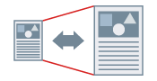

При выполнении печати можно увеличить или уменьшить документ, созданный в приложении.

1.
Откройте вкладку [Основные настройки] или [Макет страницы].
2.
Выберите размер документа, установленный в приложении, из списка [Формат страницы].
3.
Выберите формат страницы, на котором нужно печатать, в списке [Размер вывода].
Коэффициент увеличения/уменьшения устанавливается автоматически, в соответствии с выбранным форматом страницы.
4.
Если нужно установить коэффициент увеличения самостоятельно, выберите [Ручная настройка масштаба] → [Масштаб].
Функции, недоступные в сочетании с данной функцией
При выполнении ручной настройки масштаба:настройки кроме [1 на 1] для вкладки [Основные настройки] или [Макет страницы] → [Разметка страницы].
Справки
При указании значения, выходящего за рамки диапазона от 25% до 200%, документ печатается в масштабе 100%.
В зависимости от выбранного формата бумаги при увеличении/уменьшении могут получиться широкие поля или часть документа может отсутствовать.
Если в приложении предусмотрена возможность настройки масштаба, установите в драйвере принтера 100% масштаб, а в приложении - желаемый масштаб.